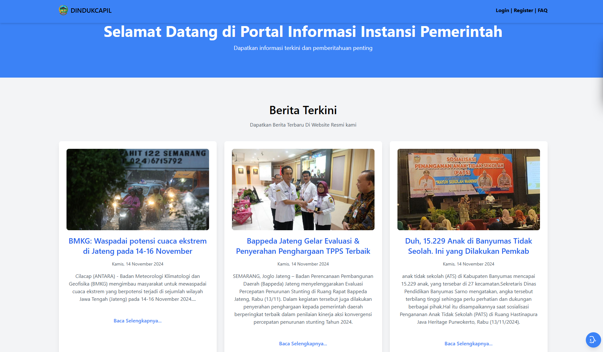
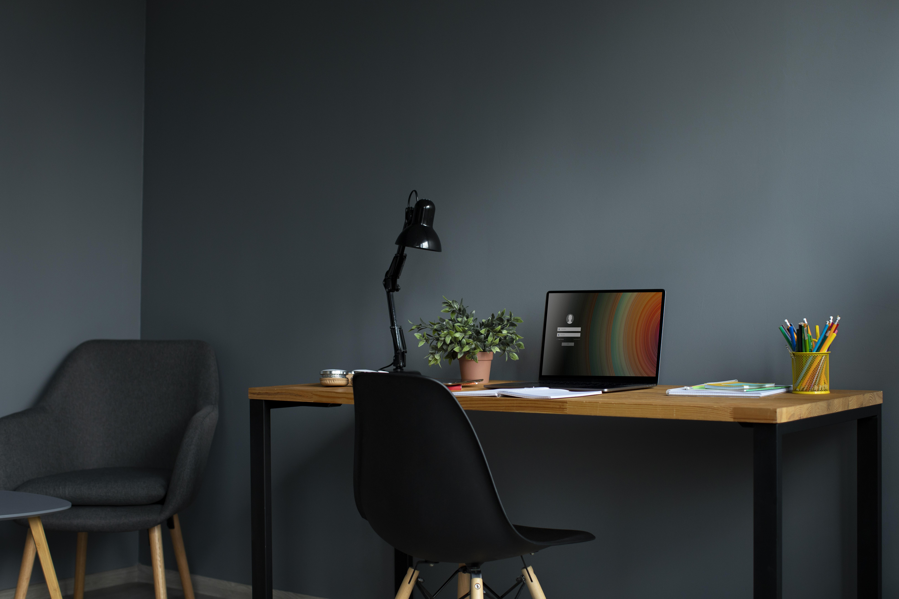
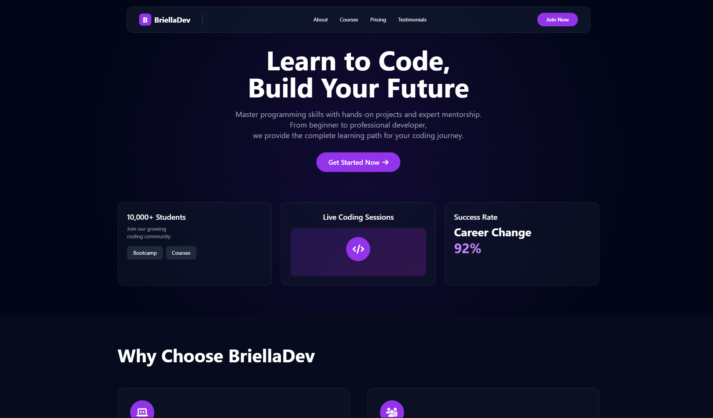
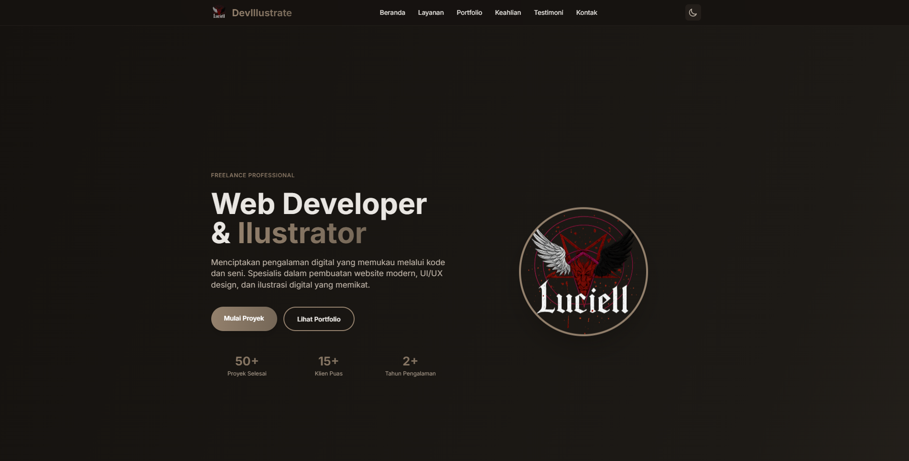

Portfolio Showcase
My Projects
Explore my latest work and creative solutions. Each project represents a unique challenge and learning experience.


Certification


Want to see more? Check out my GitHub for additional projects and contributions.
Explore More on GitHub